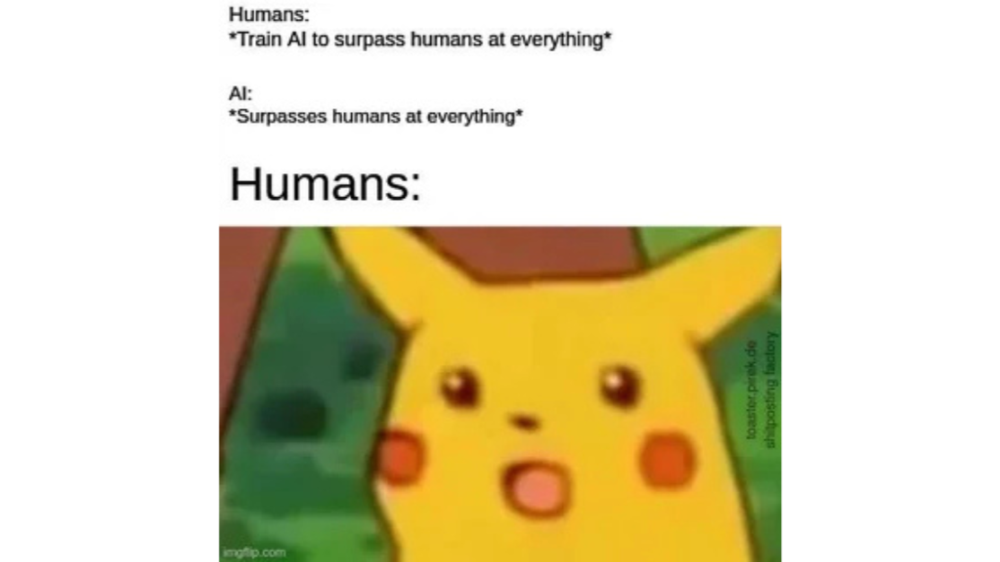

In public conversation, we speak about AI as if it suddenly appeared; a sharp discontinuity that arrived in the 2020s and is now threatens to rewrite work, media and society but AI is not the beginning of the story. AI is merely the latest stage in a 30-year behavioral data extraction pipeline; one that began not with “intelligence” but with cookies.

In 1994, Lou Montulli at Netscape invented cookies, a few years later, third-party tracking enabled advertising systems started to follow us across the open web and then Ethan Zuckerman’s invention of pop-up ads in the late 1990s turned attention and behavior itself into a commodity. This was the moment the internet quietly changed business models. Products were no longer the products. We were.
For two decades, this infrastructure grew into Google’s Alphabet ecosystem and Meta’s social data monopoly. If you have a dream about getting new shoes, Meta will start showing you shoe ads. If you simply search for them, Google will start showing you shoe ads across every platform. It felt convenient until the Cambridge Analytica scandal made it undeniable: Personal data was not only used to sell consumer goods; it was weaponized for political persuasion. Our digital lives were never really ours. They were the raw material. (reference: Cambridge Analytica Docs)
Then AI arrived and it wasn’t a new system, it was a sequel. AI is often framed as a mysterious emergent intelligence. In practice, it is a system that trains on data to recognize patterns. Humans learn across generations, a grandparent may struggle to use a TV remote, while a 3-year-old can unlock a phone, watch YouTube, connect to Wi-Fi and recite the alphabet. That is generational learning.
AI is similar: fast, statistical pattern mastery but not biological consciousness. The critical point is that AI requires data and increasingly, the most valuable data is not scraped text from reddit or wikipedia; it is real-world behavioral trace.
As of 2025, the physical world joined the extraction pipeline. Today nearly every object inside the home is a computer in disguise. “Smart” appliances, smart speakers, smart thermostats, smart cameras & doorbells, smart locks, smart plugs and switches, smart vacuum cleaners, smart HVAC, smart watches or any wearables and fitness trackers, smart sensors, all connected via Wi-Fi, Zigbee, Z-Wave, Bluetooth. These devices transmit intimate household telemetry outward.
Cars are now robotic sensor platforms with four wheels; continuously observing, logging and uploading contextual data. (reference: Mozilla Foundation: Cars are the worst for privacy)
Before 2015, algorithms primarily optimized ads. By 2025, algorithms are named to AI and are beginning to displace labor. (reference: ArXiv paper, Final Round AI)
A future where humanoid systems like NEO operate autonomously requires environmental data. A robotic vacuum mapping a living room today is a form of spatial training for tomorrow’s embodied robotics. (reference: Smart Vacuum Discovery)
"Human behavior → becomes machine training → becomes machine capability → becomes machine replacement."
The uncomfortable conclusion
AI is not a rupture. It is the logical end point of three decades of surveillance capitalism and many of us contributed to it unknowingly. The danger is not merely that AI can generate convincing text. The danger is that the very substrate of being human; preference, movement, emotion, routine has been quietly absorbed into machine learning supply chains long before “AI” became a household word. The question we face now is not whether AI is scary. It is whether we are willing to acknowledge that this future was set in motion long before we noticed and whether we are prepared to decide who will own the intelligence we helped create.